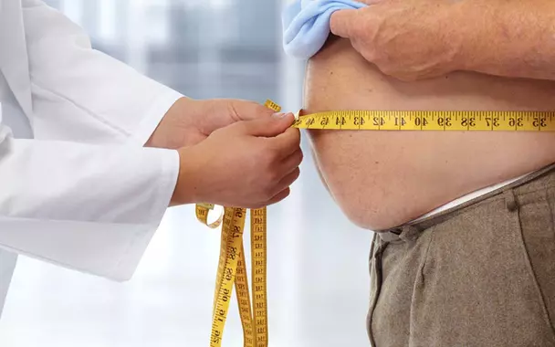

Los riesgos de la automedicación
Múltiples factores confluyen en este hábito peligroso y que
puede tener consecuencias negativas. Cada vez son más las
personas que recurren, por sus propios medios, a la toma de
un medicamento con el objetivo de tratar un dolor o
contrarrestar una molestia.

Lactancia y vínculo afectivo
La leche materna proporciona los nutrientes necesarios para
el bebé, pero cuando decimos “Fundamento de vida” nos
referimos a que ayuda a desarrollar la inteligencia y las
capacidades de lenguaje, de conocimiento, además de
protegerlo de enfermedades infecciosas y crónicas.

La obesidad dificulta el diagnóstico de las enfermedades
cardiovasculares
El cardiólogo Francisco lópez-jeménez señaló que el enceso
de masa corporal no sólo es un factor de riesgo para la
salud, sino que, además, toma más compleja la detección de
otras patologías a través de los exámenes médicos habituales

Epilepsia refractaria: por qué la dieta cetogénica puede ser
un tratamiento eficaz
En Argentina, se estima que la epilepsia afecta a una de
cada 10 personas, de las cuales entre un 20 y 30% no
responden a los fármacos. ¿De qué se trata este tipo de
alimentación y cómo se aplica?